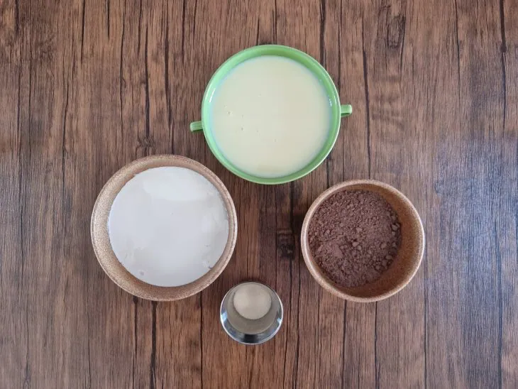
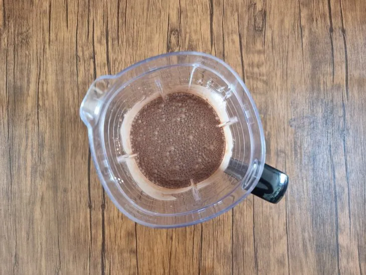
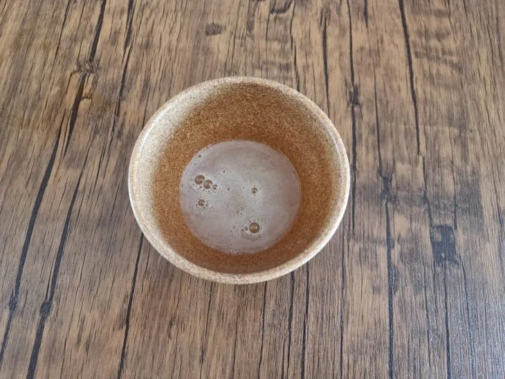
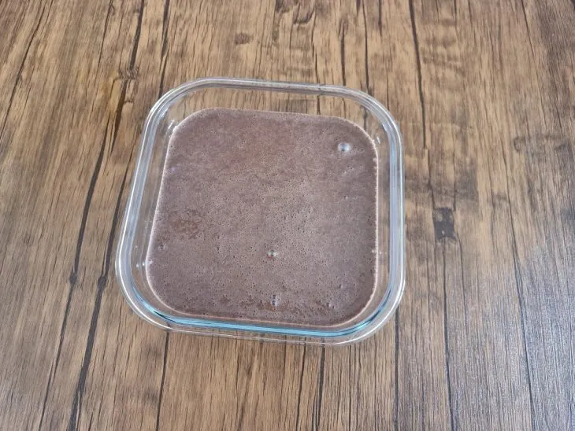
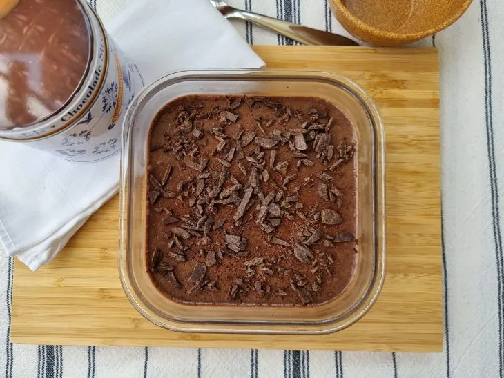

57 receitas com frango que são deliciosas e fáceis de preparar
42 receitas com peito de frango práticas e irresistíveis
32 receitas de filé de frango para variar o cardápio do dia a dia
10 receitas de fricassê de frango cremoso que fazem sucesso na mesa
Mousse de chocolate fácil
Ingredientes
Modo de preparo

Reúna todos os ingredientes;

No liquidificador, coloque o leite condensado, o creme de leite, o chocolate e bata por cerca de 2 minutos;

Em um recipiente, prepare a gelatina conforme as instruções do fabricante;Adicione a gelatina no liquidificador e bata até incorporar, por cerca de 30 segundos;

Transfira para um refratário e leve para a geladeira por no mínimo 2 horas;

Agora é só servir. Bom apetite!
 57 receitas com frango que são deliciosas e fáceis de preparar
57 receitas com frango que são deliciosas e fáceis de preparar
 42 receitas com peito de frango práticas e irresistíveis
42 receitas com peito de frango práticas e irresistíveis
 32 receitas de filé de frango para variar o cardápio do dia a dia
32 receitas de filé de frango para variar o cardápio do dia a dia
 10 receitas de fricassê de frango cremoso que fazem sucesso na mesa
10 receitas de fricassê de frango cremoso que fazem sucesso na mesa